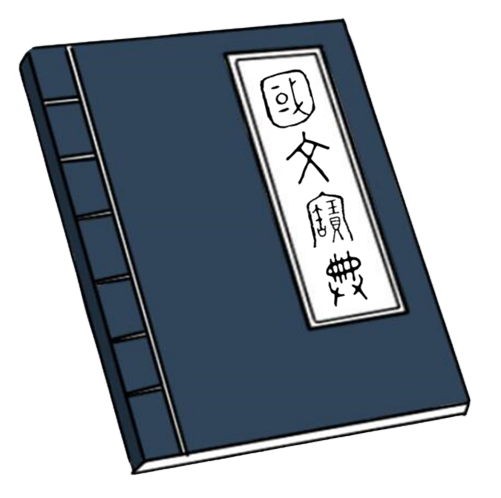

如山父愛與歲月背影的深情樂章
結合朱自清《背影》課文賞析，聆聽《阿爸》、《小時候》與《再聯絡》的真摯旋律，邊聽音樂邊完成歌詞填空與親情深層體悟
第一曲
父愛如山・深情對唱
阿爸
Song國文
阿爸
演唱：周杰倫 & 洪榮宏・2010
00:00
--:--
歌曲背景與文學導讀
作詞：方文山
作曲：周杰倫
演唱：周杰倫 & 洪榮宏
發行：2010
全系列好歌學習地圖 (3首) 進行中 (1/3)
【阿爸】
作詞：方文山 作曲：周杰倫 演唱：周杰倫 & 洪榮宏 2010
教用學習單螢光筆解答